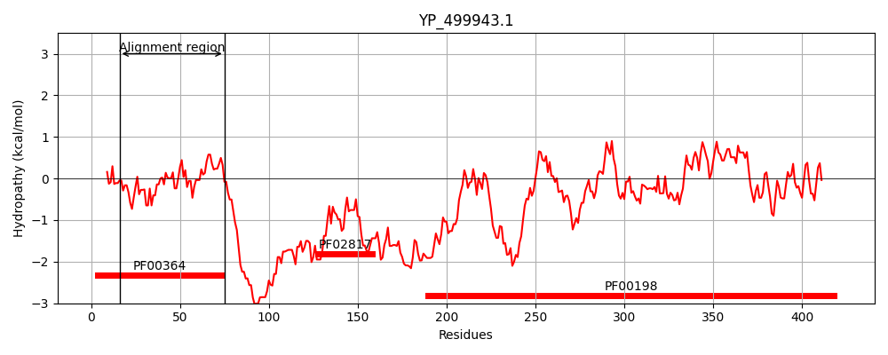
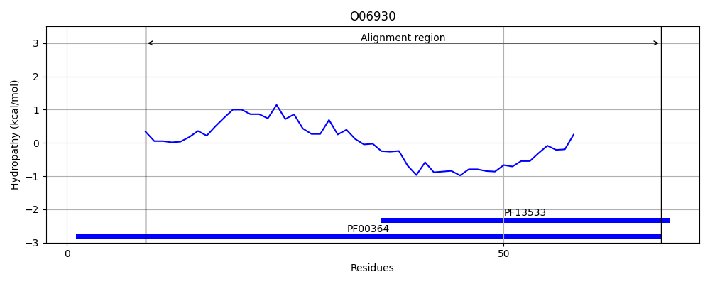
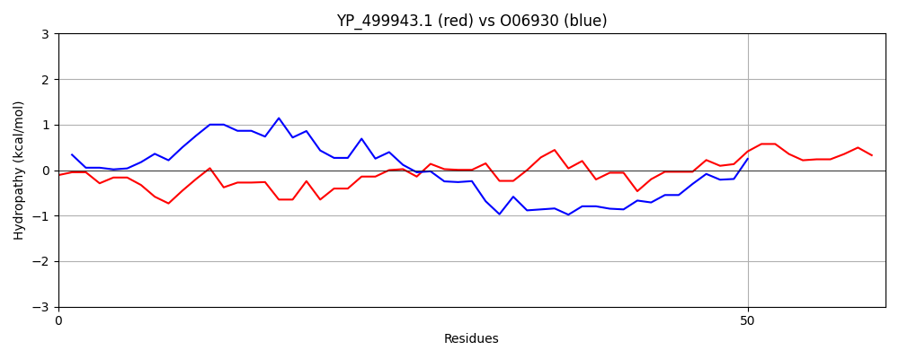

Hit Accession: O06930
Hit TCID: 3.B.1.1.4
Hit Description: gnl|BL_ORD_ID|6772 gnl|TC-DB|O06930|3.B.1.1.4 BIOTIN PROTEIN - Malonomonas rubra.
Mach Len: 60
e:0.000000
Query TMS Count : 0
Hit TMS Count: 0
TMS-Overlap Score: 0.000000
Predicted Substrates:CHEBI:9175;sodium(1+)
BLAST Alignment:
| Protein Hydropathy Plots: | |
|---|---|
|  |  |
Pairwise Alignment-Hydropathy Plot: | |
|  | |